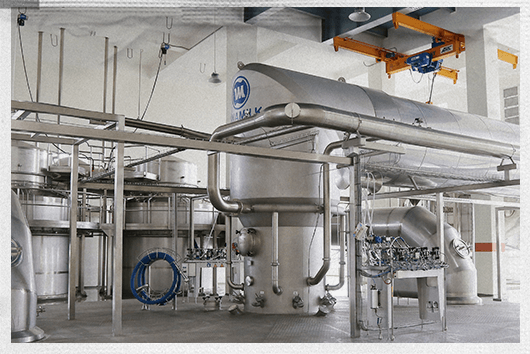

Nhìn nhà máy “đắp chiếu” sau chiến tranh, ít ai ngờ đây sẽ trở thành cái nôi cho thương hiệu sữa bột trẻ em đầu tiên của Việt Nam, người khai sinh là bà Mai Kiều Liên - khi đó mới ngoài 30 tuổi.

Những ký ức, cột mốc trong hành trình khai phá thị trường sữa bột trẻ em tuy khó khăn nhưng đầy máu lửa gắn liền với bà Mai Kiều Liên, người trực tiếp khai sinh ra Dielac - thương hiệu sữa bột đầu tiên của Việt Nam.
Năm 1988, Vinamilk tiếp quản và đầu tư để khôi phục lại một nhà máy của nước ngoài, vốn “đắp chiếu” nhiều năm sau chiến tranh. Thấy lon sữa bột đầu tiên được làm ra bởi chính bàn tay khối óc người Việt không được người tiêu dùng mặn mà và chịu sức ép cạnh tranh trước hàng ngoại, doanh nghiệp hiểu rằng ngoài thời gian thì chính chất lượng sẽ là yếu tố quyết định để thay đổi quan niệm chuộng hàng ngoại của người tiêu dùng bấy giờ.
Một mặt tháo gỡ thị trường trong nước mặt khác bà cũng tìm đường để xuất khẩu sữa bột Việt ra nước ngoài. Quyết tâm giành hợp đồng xuất khẩu bằng được, bà cùng đoàn 27 đại diện Việt Nam tiến vào biên giới Iraq giữa đợt oanh kích năm 1998. Dưới tầng hầm ký bản hợp đồng giữa 1-2h sáng, phía trên đầu là tên lửa nhả đạn, khói cuộn đầy trời. Cũng có sợ, có lo, nhưng "chiến trường" kinh doanh là nơi người nữ lãnh đạo quan tâm hơn cả, bất chấp hiểm nguy để tìm con đường dài hơi cho việc vận hành. Đến năm 2005, Vinamilk tiếp tục nối lại hợp đồng xuất khẩu vào thị trường Iraq, sau khi vượt qua 15 hãng sữa quốc tế. Nhờ vậy, kim ngạch xuất khẩu đạt dấu son với con số 137 triệu USD, tăng gấp ba lần so với 2004.

Một trong những khách hàng nhí đầu tiên sử dụng sữa Dielac khi vừa ra mắt thị trường.
Năm 1976, bà Mai Kiều Liên tốt nghiệp ngành sữa tại Nga. Về nước, năm 1982 bà bắt đầu từ vị trí kỹ sư, quản đốc, kỹ thuật văn phòng rồi Phó giám đốc nhà máy sữa Thống Nhất. Đến năm 1984, bà được bổ nhiệm là Phó tổng giám đốc phụ trách kinh tế của Xí nghiệp liên hiệp Sữa - Cà phê - Bánh kẹo I (tiền thân của Vinamilk) khi mới 31 tuổi.
Bà Mai Kiều Liên nhớ lại, ngày ấy cuộc sống vô cùng khó khăn. Nền kinh tế kế hoạch hóa, hầu hết sinh hoạt đều do Nhà nước chi trả. Các gia đình xếp hàng, đổi tem phiếu lấy nhu yếu phẩm hàng ngày. Có người dùng gạch "giữ chỗ" nhưng đến lượt thì không còn hàng, đành về tay không.
Sữa, thời ấy là xa xỉ phẩm. Những hộp sữa đặc vẹo vọ nhưng lại là niềm mơ ước của mọi đứa trẻ. Ngày thường mẹ sẽ giấu đi, đến khi nhà có người ốm mới mang ra, pha thêm nước nóng để uống. Đám trẻ bâu quanh cửa sổ, hít hà mùi sữa cho đỡ thèm. "Tặng sữa còn quý hơn tặng tiền", là câu nói cửa miệng của nhiều người ở thế kỷ trước. Bức tranh ấy trở thành niềm thôi thúc với bà Mai Kiều Liên: làm sao để xây dựng nền công nghiệp sữa cho Việt Nam, bình dân hóa ngành sữa bột trẻ em với những sản phẩm đủ dinh dưỡng, vừa túi tiền.
Vinamilk được giao phụ trách hai nhà máy Trường Thọ và Thống Nhất. Còn một nhà máy khác (về sau được mang tên Dielac) vốn của một tập đoàn nước ngoài xây dựng nhưng chưa kịp hoàn thiện, hệ thống điều khiển vẫn dở dang. Vậy nên sau khi Nhà nước tiếp quản năm 1975, nhà máy này "đắp chiếu" suốt hơn chục năm liền.
Năm 1986, khi vốn tự có của Vinamilk đạt mức 20 tỷ đồng, bà Mai Kiều Liên mới nghĩ tới chuyện phục hồi nhà máy trên, thực hiện giấc mơ sản xuất sữa bột cho trẻ em Việt.
Những mẻ sữa đầu tiên ra lò từ nhà máy Dielac năm 1989.
Nhà máy hiện nay có dây chuyền hiện đại, tháp sấy công suất lớn.
Những mẻ sữa đầu tiên ra lò từ nhà máy Dielac năm 1989.
Nhà máy hiện nay có dây chuyền hiện đại, tháp sấy công suất lớn.
Vì sao không làm sớm hơn? Thời đó doanh nghiệp chịu khó khăn chồng chất trong bối cảnh vừa bị cấm vận, miền Bắc gặp chiến tranh. Nguyên vật liệu không có nên việc sản xuất gần như "cầm hơi". Hai nhà máy Trường Thọ và Thống Nhất công suất 196 triệu hộp mỗi năm nhưng sản xuất thực tế chỉ 8 triệu hộp mỗi năm, cũng chỉ vì không có nguyên vật liệu.
Ý nghĩ nhen nhóm, nhưng làm sao thành hình? Lợi thế của bà Mai Kiều Liên đến từ nền tảng kiến thức vững chắc. Quá trình đào tạo ở Nga không chỉ cung cấp kiến thức, công nghệ chế biến sữa, bà còn được học các kiến thức về máy móc thiết bị, tự động hóa - tất cả thông tin chuyên ngành. Đề tài luận án tốt nghiệp của bà cũng là thiết kế một nhà máy sữa bột trẻ em với 500 tấn sữa một ngày, phải lo khí, điện, nước, công nghệ bố trí mặt bằng, máy móc, dây chuyền chế biên…
Từ kiến thức đó, bà hiểu hướng đi tiếp theo của nhà máy: cần đến một hệ thống tự động hóa để vận hành. Nhưng đi đâu để kiếm? Thời bấy giờ, Vinamilk nhận được hai lời đề nghị. Một là công ty Pháp, yêu cầu 3 triệu USD; đơn vị thứ hai đưa giá 2,7 triệu USD để phục hồi nhà máy. "Lúc đó công ty không có đồng USD nào. Có bao nhiêu ngoại tệ là lo nhập nguyên vật liệu để tái tạo, sản xuất, tạo công ăn việc làm", bà nhớ lại.
Phần vì chi phí phục hồi quá cao, phần vì không có ngoại tệ để thanh toán chi phí, bà Mai Kiều Liên quyết định dùng chất xám Việt để thực hiện kế hoạch phục hồi nhà máy cũ. Là người trong nghề, có kiến thức, có sách vở, bà nảy ra ý nghĩ xây dựng đội ngũ chuyên về tự động hóa - kết hợp các kỹ sư của Vinamilk và các nhà khoa học Việt Nam. Đội ngũ các nhà khoa học đến nhà máy khảo sát, bảo rằng làm được, giá chỉ 500.000 USD. Quan trọng nhất, họ đồng ý nhận thanh toán bằng tiền Việt. Và đây chính là bước đầu tiên trong hành trình của thương hiệu sữa bột đầu tiên của Việt Nam, mang tên Dielac.
Dự án thực hiện suốt một năm. Đến năm 1989, dây chuyền chạy thử, cả đội ngũ xúm lại, chăm chú quan sát những mẻ sữa đầu tiên ra lò. Điều lo lắng nhất của Mai Kiều Liên lúc này là chất lượng sản phẩm có đạt hay không. Có sữa, bà lập tức mang đến phòng thí nghiệm, pha với nướ c ấm, hồi hộp chờ kết quả.
"Sữa không bị tách bơ, chúng tôi biết mình đã thành công", vị Tổng giám đốc tự hào.


Năm 1989, những lon sữa Dielac đầu tiên xuất xưởng, đưa lên xe tải của Vinamilk đến các điểm bán. Đi chào hàng nhiều nhưng không ai mua, ban lãnh đạo công ty đặt câu hỏi: lý do là gì?
Bà Liên phân tích, người Việt lúc đó vốn mang tâm lý nghi ngại với các sản phẩm sản xuất trong nước, chưa kể đó lại là một sản phẩm mà Việt Nam chưa sản xuất được bao giờ như sữa bột trẻ em. Quan niệm "rẻ thì không chất lượng" khiến người dùng, ngay cả ở phân khúc thu nhập thấp vẫn luôn tin rằng những sản phẩm sữa đắt tiền sẽ tương ứng chất lượng cao. Từ thực tế đó, ban lãnh đạo công ty xác định: chúng ta cần chứng minh chất lượng của sữa Việt không thua gì sữa ngoại. Vinamilk đã đưa sản phẩm sữa bột Dielac đến các trung tâm kiểm nghiệm chất lượng tại Áo, Singapore.
Thuyết phục bằng chất lượng, đó là kim chỉ nam và chiến lược nhất quán của Vinamilk khi đó. Dielac được sản xuất theo những công thức tiên tiến nhất và bám sát nguyên tắc sữa chứa nhiều thành phần gần giống với sữa mẹ nhất có thể. Ngoài ra, đơn vị hợp tác với các tổ chức quốc tế chuyên về ứng dụng vi chất và vi sinh để phát triển sản phẩm phù hợp thể chất cũng như tình trạng dinh dưỡng cụ thể của trẻ em Việt Nam.
Được phát triển dựa trên các công thức quốc tế nhưng phải phù hợp với thể trạng trẻ em Việt là yếu tố tiên quyết mà Vinamilk xác định đối với các sản phẩm dinh dưỡng của mình. Ví dụ sữa ngoại thường gia tăng vitamin A và D vì trẻ nhỏ ở vùng lạnh, thiếu ánh nắng mặt trời. Nhưng với trẻ Việt Nam thì chế độ ăn thiếu kẽm, sắt. Công thức sữa được nghiên cứu phát triển, có những điều chỉnh, ứng dụng thành tựu nghiên cứu mới nhất nhằm đem đến nguồn dinh dưỡng tối ưu cho trẻ nhỏ.
Phòng kiểm tra chất lượng sản phẩm tại nhà máy sữa bột xưa và nay.
Nhưng đó vẫn chưa phải đã hết thử thách. Tuy đã kiểm nghiệm chất lượng nhưng người dùng phải dùng thử mới tin. Đối với Vinamilk, công ty hiểu đây là nhu cầu tất yếu khi nhãn hiệu Dielac còn mới, người mẹ nào cũng đặc biệt kỹ lưỡng khi chọn mua các sản phẩm dinh dưỡng cho các con của mình. Chính vì vậy, đội ngũ kinh doanh và tiếp thị của công ty tiếp tục kiên trì giới thiệu, thuyết phục để được đặt sản phẩm ở các cửa hàng, tạp hóa. Công ty chấp nhận không thu tiền trước, nếu có ai mua thì sẽ quay lại lấy sau.
Yếu tố cuối cùng để thuyết phục khách hàng chính là giá bán. Giữa thời điểm bao cấp, một lon sữa ngoại khi ấy đắt gấp đôi hộp sữa Dielac, nhưng có thể nói chất lượng tương đương nhau. Phép so sánh này khiến nhiều người dùng dần thay đổi hành vi mua hàng, lựa chọn sữa Việt để con em mình có thể tiếp cận nguồn dinh dưỡng lành mạnh một cách lâu dài. Kể cả những gia đình thu nhập thấp vẫn có thể cho con uống sữa - giấc mơ mà trước thời điểm 1989, họ chưa bao giờ nghĩ tới.
Cửa hàng bày bán sản phẩm Vinamilk ở thập niên 90 thế kỷ trước và ngày nay.
Chất lượng tốt và giá thành hợp lý, đến nay vẫn là công thức căn bản giúp Vinamilk dẫn đầu thị trường.
Xoay chuyển quan niệm người tiêu dùng từ nghi ngờ đến tin tưởng và chọn dùng sữa bột trẻ em “made in Vietnam”, đến nay Dielac đã trở thành giải pháp dinh dưỡng cho hàng triệu người dùng Việt Nam. Nhãn hiệu này liên tục dẫn đầu thị trường dù chịu nhiều áp lực cạnh tranh, góp phần không nhỏ vào câu chuyện thành công chung của Vinamilk.
Cột mốc mà bà Mai Kiều Liên mãi không quên chính là thời điểm giành được hợp đồng xuất khẩu vào năm 1998, cách đây đúng 25 năm. Dielac cũng là sản phẩm đầu tiên của Vinamilk được "xuất ngoại", tiếp tục là mặt hàng xuất khẩu chủ lực của hãng cho đến ngày nay. Nhãn sữa đóng góp vào sự hiện diện của Vinamilk tại 57 quốc gia và vùng lãnh thổ, với tổng kim ngạch xuất khẩu lũy kế hơn 2,6 tỷ USD.
Năm 1990, trước làn sóng hội nhập, các doanh nghiệp nhìn thấy rõ tình thế: xuất khẩu là yếu tố sống còn. Cơ hội đến một cách bất ngờ, năm 1996 Iraq có chương trình đổi dầu lấy lương thực. Để tiếp cận, bà Mai Kiều Liên ngỏ lời đề nghị rằng Vinamilk sẽ tài trợ hai container sữa Dielac với suy nghĩ rằng người ta dùng thử, tin tưởng thì cơ hội bán hàng của mình sẽ cao. Sau khi Chính phủ Iraq kiểm tra chất lượng và trực tiếp sang thăm nhà máy Dielac, họ đề nghị Vinamilk cung cấp 300 tấn sữa trong ba tháng.
Ngay sau lời đề nghị của nước bạn, Vinamilk tham gia đoàn công tác 28 người của Việt Nam đến Iraq thực hiện cuộc đấu thầu quốc tế. Đoàn có nhiều doanh nghiệp, sữa là đơn vị đàm phán cuối cùng. Khoảng 1-2h sáng, khi chính thức ký tên lên bản hợp đồng, bà Mai Kiều Liên cảm thấy đầy tự hào. Bởi trước đó, không ai nghĩ Việt Nam có thể xuất khẩu sữa trẻ em, rằng sữa Việt Nam 100% là nhập ngoại.
Trở về nước, nhà máy Vinamilk gần như sáng đèn 24/24, đội ngũ lãnh đạo công ty cũng thường xuyên túc trực ở nhà máy cũng với anh em cán bộ, công nhân. Nỗ lực của toàn tập thể nhận về "quả ngọt", 300 tấn hàng hoàn thành đúng chỉ tiêu, giao cho đối tác. Từ đó, kim ngạch xuất khẩu giữa hai bên duy trì và bền vững trong suốt hơn 10 năm sau đó.
Một câu chuyện vui mà xen lẫn sự tự hào được phòng Kinh doanh Quốc tế của Vinamilk kể lại rằng, khi đi thực tế thị trường ở các nước Trung Đông, người dân ở một số nơi đã quen thuộc với Dielac đến mức dùng từ “Dielac” để gọi thay cho sữa bột trẻ em.
Bà Mai Kiều Liên tại biên giới Iraq trong chuyến đi đấu thầu quốc tế năm 1998.
Những cuộc thương thảo và chuyến hàng xuất khẩu đầu tiên.
Bà Mai Kiều Liên tại biên giới Iraq
trong chuyến đi đấu thầu
quốc tế năm 1998.
Những cuộc thương thảo và chuyến hàng xuất khẩu đầu tiên.
“Những em bé đầu tiên uống sản phẩm này từ những ngày đầu của 25 năm trước, đến nay đã là những ông bố bà mẹ, tiếp tục lựa chọn Dielac để chăm sóc thế hệ tương lai, gửi gắm ước mơ về những em bé cao khỏe, thông minh”, ông Võ Trung Hiếu, Giám đốc Kinh doanh quốc tế của Vinamilk chia sẻ.
Những bước đi đầu tiên này cũng chính là nền tảng cho hoạt động kinh doanh quốc tế giữa Vinamilk với các đối tác khác tại Trung Đông lẫn toàn cầu cho đến tận hôm nay.
Những khách hàng quốc tế đầu tiên của Dielac năm 1989.
Các sản phẩm của Vinamilk đến với thị trường quốc tế.
Trong nỗ lực xây dựng ngành công nghiệp sữa, Vinamilk không ngừng hiện đại hóa dây chuyền sản xuất.
Năm 2013, hãng khánh thành một siêu nhà máy sữa bột đầu tiên của Việt Nam tại Bình Dương. Vốn đầu tư 100 triệu USD, công suất 54.000 tấn một năm với tháp sấy khổng lồ, dây chuyền hiện đại khép kín. Đây là sự đầu tư chiến lược có tác động rất lớn để gia tăng năng lực sản xuất lẫn chất lượng sản phẩm, đưa ngành hàng sữa bột trẻ em của Vinamilk phát triển mạnh mẽ nhiều năm sau đó.
Cũng trong giai đoạn này, doanh nghiệp sữa Việt liên tục trở thành các đối tác chiến lược của Viện dinh dưỡng Quốc gia cùng những tập đoàn lớn như Chrs. Hansen, DSM, Dupont… để ứng dụng các nghiên cứu tiên tiến vào các sản phẩm sữa bột trẻ em.
Liên tiếp nhiều năm và gần nhất là năm 2021, Vinamilk là nhà sản xuất đứng đầu về sản lượng trong ngành hàng sữa bột trẻ em tại Việt Nam (theo Nielsen), trong đó Dielac có phần đóng góp rất lớn. Nền công nghiệp sữa Việt Nam từ con số không, qua gần 5 thập kỷ phát triển của Vinamilk, đến nay đã đạt nhiều dấu ấn rực rỡ với loạt nhãn hiệu đạt chuẩn quốc tế nhưng có giá thành hợp lý cho người dùng Việt.
Vừa qua, tại Hội nghị sữa Châu Á tại Singapore, câu chuyện về Dielac đã được Vinamilk chia sẻ trong chủ đề “Xây dựng tình yêu thương hiệu trong ngành sữa”. Với sản phẩm Dielac, 33 năm qua, hành trình của thương hiệu đi từ việc cung cấp một lựa chọn về dinh dưỡng, đến mục tiêu lớn hơn: cải thiện tầm vóc người Việt, ngày một nâng cao chất lượng sản phẩm theo chiều rộng lẫn chiều sâu, luôn đồng hành cùng mẹ để nuôi con khôn lớn đường dài...
Thương hiệu này tin tưởng rằng: "Đi từ trái tim sẽ chạm đến trái tim". Dù là người mẹ tại Việt Nam hay ở bất cứ đâu trên thế giới, Dielac vẫn luôn thấu hiểu kỳ vọng mà họ gửi gắm khi chọn nguồn dinh dưỡng cho con để từ đó hiện thực hóa nó trong từng ly sữa.